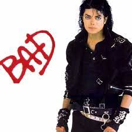

Biography
Michael Joseph Jackson (August 29, 1958 – June 25, 2009) was an American singer, songwriter, and dancer. Dubbed the "King of Pop", he is regarded as one of the most significant cultural figures of the 20th century. Over a four-decade career, his contributions to music, dance, and fashion, along with his publicized personal life, made him a global figure in popular culture. Jackson influenced artists across many music genres; through stage and video performances, he popularized complicated dance moves such as the moonwalk, to which he gave the name, as well as the robot. He is the most awarded individual music artist in history.  The eighth child of the Jackson family, Jackson made his professional debut in 1964 with his elder brothers Jackie, Tito, Jermaine, and Marlon as a member of the Jackson 5 (later known as the Jacksons). Jackson began his solo career in 1971 while at Motown Records. He became a solo star with his 1979 album Off the Wall. His music videos, including those for "Beat It", "Billie Jean", and "Thriller" from his 1982 album Thriller, are credited with breaking racial barriers and transforming the medium into an artform and promotional tool. He helped propel the success of MTV and continued to innovate with videos for the albums Bad (1987), Dangerous (1991), and HIStory: Past, Present and Future, Book I (1995). Thriller became the best-selling album of all time, while Bad was the first album to produce five U.S. Billboard Hot 100 number-one singles
The eighth child of the Jackson family, Jackson made his professional debut in 1964 with his elder brothers Jackie, Tito, Jermaine, and Marlon as a member of the Jackson 5 (later known as the Jacksons). Jackson began his solo career in 1971 while at Motown Records. He became a solo star with his 1979 album Off the Wall. His music videos, including those for "Beat It", "Billie Jean", and "Thriller" from his 1982 album Thriller, are credited with breaking racial barriers and transforming the medium into an artform and promotional tool. He helped propel the success of MTV and continued to innovate with videos for the albums Bad (1987), Dangerous (1991), and HIStory: Past, Present and Future, Book I (1995). Thriller became the best-selling album of all time, while Bad was the first album to produce five U.S. Billboard Hot 100 number-one singles
Notable events
- Early life and the Jackson 5 (1958–1975)
- Early life and the Jackson 5 (1958–1975)
- Early life and the Jackson 5 (1958–1975)
- Early life and the Jackson 5 (1958–1975)
- Early life and the Jackson 5 (1958–1975)
“If you enter this world knowing you are loved and you leave this world knowing the same, then everything that happens in between can be dealt with.”